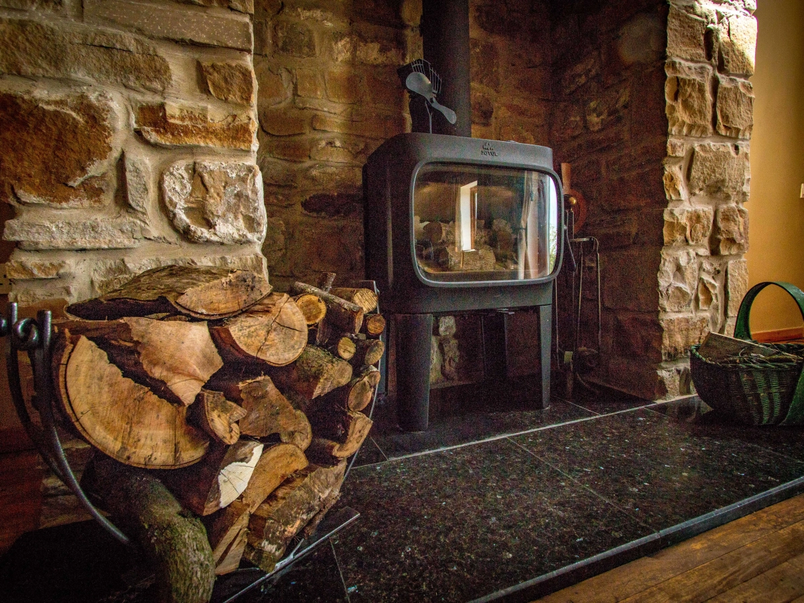
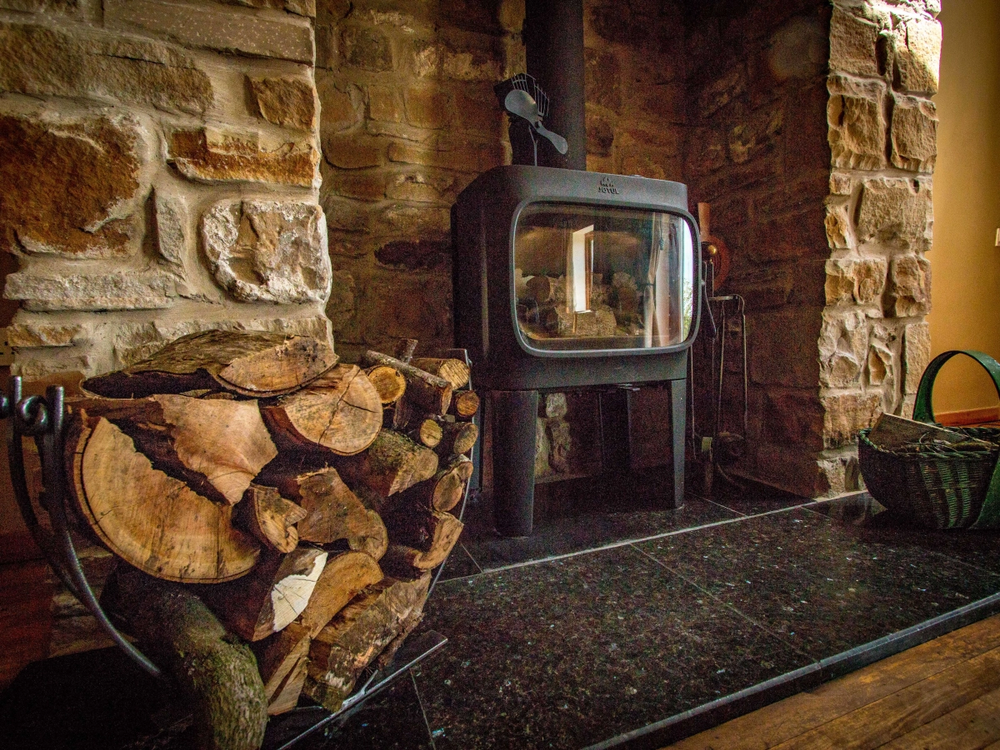

4★ self-catering accommodation. Nestled within the breathtaking embrace of Northumberland National Park and Hadrian's Wall Country, High Shield Cottage offers an idyllic retreat for two, where the allure of natural beauty meets the intrigue of historical wonder and the cosmic grace of dark skies. An unforgettable escape awaits as you immerse yourself in the serenity of this rugged landscape, positioned snugly between the iconic Hadrian's Wall to the north and the remarkable Vindolanda Roman Fort excavations to the south.
2
entire cottage
1
1
wood burner
Gallery
Unwind in front of a cosy wood burner in the spacious, vaulted living room in the evening, as sweeping vistas carry you across the natural splendours of the South Tyne Valley and North Pennines. Then greet the day with the symphony of birdsong and a morning tea on the charming south-facing terrace, while the countryside awakens around you.
 



Whether a romantic escape or a peaceful solo adventure, High Shield Cottage provides the perfect backdrop. Within easy walking distance of the most breathtaking stretch of Hadrian's Wall, and the archaeological excavations of Magna and Vindolanda roman forts, as well as the windswept wildness and bird watching of Cragg Lough, Greenlee Lough National Nature Reserve and Grindon Lough, you will find yourself ideally positioned. As evening descends, lose yourself in the vast cosmos above, with the cottage tucked inside Europe's largest protected dark sky park.
The self-catering accommodation includes a fully fitted and equipped kitchen, bedroom with double bed, and bathroom with separate bath and shower. For those with an eco-conscious mindset, a solar PV system provides much of the accommodation's electricity, while a biomass boiler and solar thermal system provide much of the heat and hot water. Electric vehicles are also accommodated with convenient EV charging.
Your sojourn to High Shield Cottage offers serenity, discovery and rejuvenation. Immerse yourself in the tranquillity of a holiday cottage nestled in Northumberland National Park, and Northumberland and Kielder Water and Reservoir International Dark Sky Park.
A fantastic location with stunning view from the patio. Away from it all but with hiking and cycling trails, Vindolanda and Twice Brewed pub and Stargazing all within easy reach.
A wonderful property with brilliant views overto Vindolanda. Comfortable bed, good shower, well laid out and easy parking. Right in the centre of a fantastic area rich in Roman history. We had a great time and a big thank you to or wonderful hosts Michael and Catherine.
Great property with outstanding views in the most fabulous landscape. If you love the remote countryside, this is for you.
Absolutely fantastic cottage in an incredible location. Very well equipped, spacious and comfortable. The electric car charging point was a real bonus
Location
Use this map to find our more about the neighbourhood.
A69 / B6318
AD122
685
Bardon Mill
Click for Map Links
Book Direct
Book now for a retreat that harmonises natural splendour and rich history, offering a meditative respite. The minimum stay is three nights, enough to begin to feel the tranquillity.
£360 for 3 nights, plus £90 per additional night
Michael West
high.shield.cottage@gmail.com
+44 (0) 771 425 7048
See terms and conditions for more information.